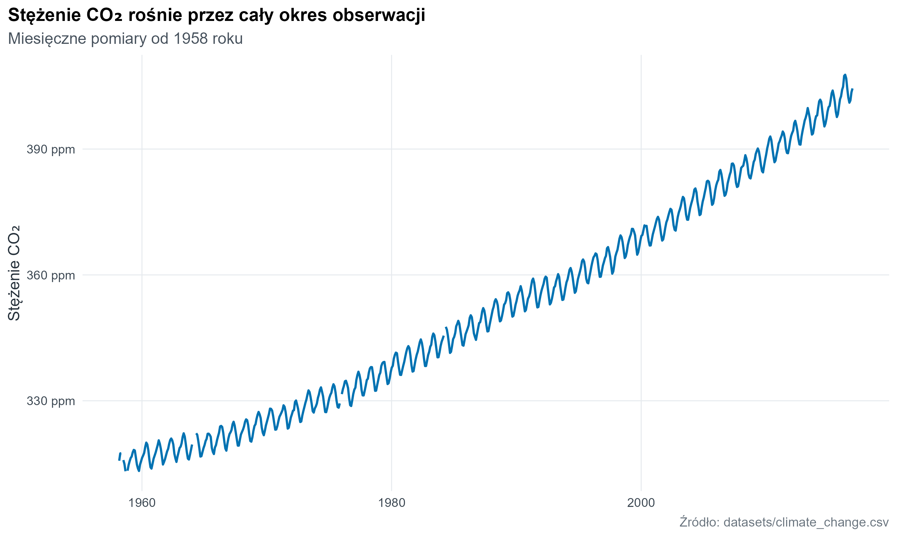
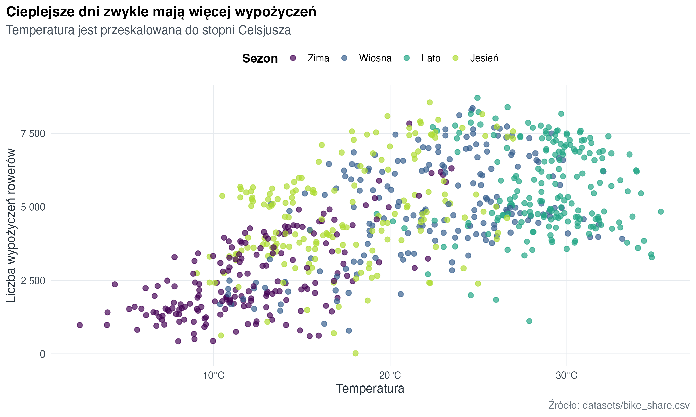
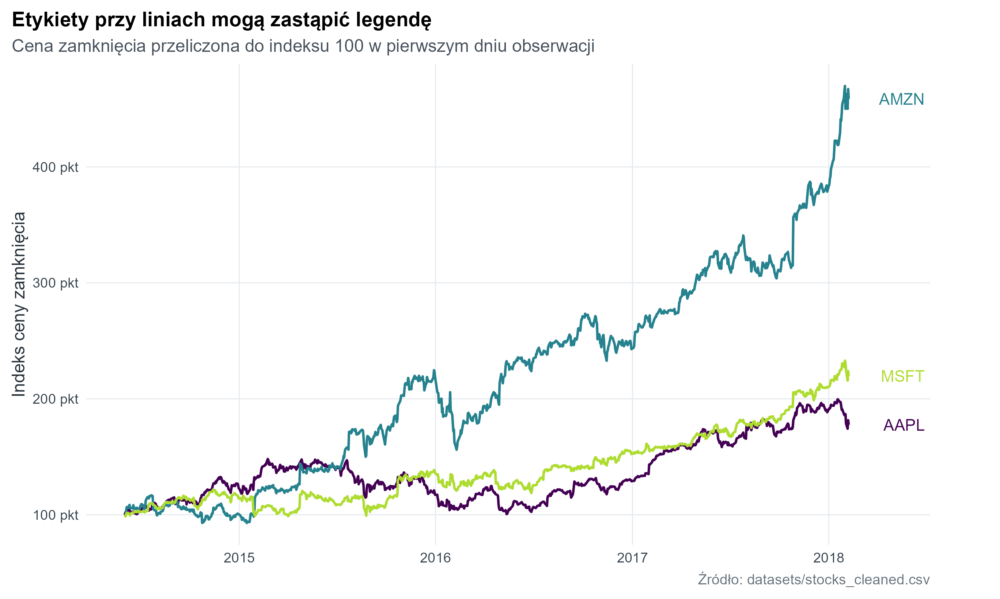
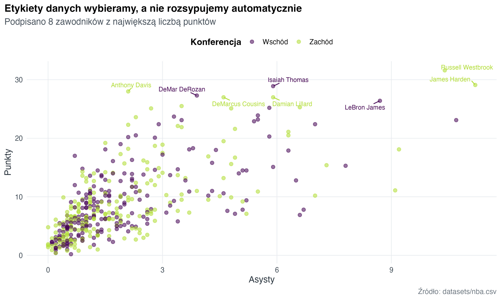
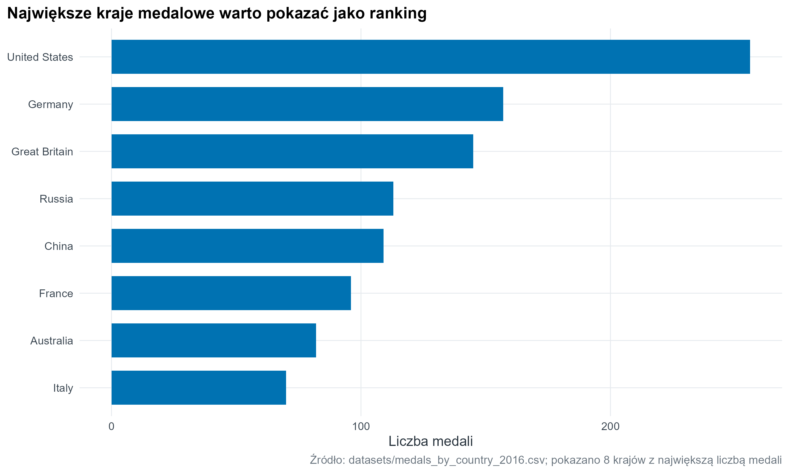

library(tidyverse)
library(here)
library(janitor)
library(lubridate)
library(ggrepel)
source(here("R", "theme_course.R"))
theme_set(theme_course())13 Etykiety i tytuły
Tytuł (title), podtytuł (subtitle), etykiety osi (axis labels), etykiety danych (data labels), legenda (legend) i podpis (caption) są częścią wykresu. Dobry tekst nie opisuje wszystkiego, tylko usuwa najważniejsze niejasności: co jest na osiach, jaka jest jednostka, skąd są dane i jaki wniosek warto sprawdzić.
13.1 Tytuł mówi, jak czytać wykres
Tytuł nie musi być nazwą typu wykresu. Lepszy tytuł podpowiada, na co spojrzeć, a podtytuł dopowiada zakres danych lub sposób obliczenia.
climate <- readr::read_csv(here("datasets", "climate_change.csv"), show_col_types = FALSE) |>
mutate(date = lubridate::ymd(date))
climate |>
ggplot(aes(x = date, y = co2)) +
geom_line(colour = "#0072B2", linewidth = 0.8) +
scale_y_continuous(labels = scales::label_number(suffix = " ppm")) +
labs(
title = "Stężenie CO₂ rośnie przez cały okres obserwacji",
subtitle = "Miesięczne pomiary od 1958 roku",
x = NULL,
y = "Stężenie CO₂",
caption = "Źródło: datasets/climate_change.csv"
)
13.2 Etykiety osi są miejscem na jednostki
Jeżeli jednostka jest w tytule, odbiorca musi jej szukać. Jeżeli jest przy osi, jest widoczna dokładnie tam, gdzie odczytywana jest wartość.
bike <- readr::read_csv(here("datasets", "bike_share.csv"), show_col_types = FALSE) |>
mutate(
temp_c = temp * 41,
season = factor(
season,
levels = 1:4,
labels = c("Zima", "Wiosna", "Lato", "Jesień")
)
)
bike |>
ggplot(aes(x = temp_c, y = total_rentals, colour = season)) +
geom_point(alpha = 0.68, size = 2.1) +
scale_colour_course_d(name = "Sezon") +
scale_x_continuous(labels = scales::label_number(suffix = "°C")) +
scale_y_continuous(labels = scales::label_number(big.mark = " ")) +
labs(
title = "Cieplejsze dni zwykle mają więcej wypożyczeń",
subtitle = "Temperatura jest przeskalowana do stopni Celsjusza",
x = "Temperatura",
y = "Liczba wypożyczeń rowerów",
caption = "Źródło: datasets/bike_share.csv"
)
13.3 Bezpośrednie etykiety serii
Gdy na wykresie jest kilka linii, bezpośrednie etykiety (direct labels) często są czytelniejsze niż legenda. Etykieta przy końcu linii skraca drogę wzroku między kolorem a nazwą serii.
stocks_index <- readr::read_csv(here("datasets", "stocks_cleaned.csv"), show_col_types = FALSE) |>
janitor::clean_names() |>
select(-any_of("x1")) |>
filter(name %in% c("AAPL", "AMZN", "MSFT")) |>
arrange(name, date) |>
group_by(name) |>
mutate(close_index = close / first(close) * 100) |>
ungroup()
stock_ends <- stocks_index |>
group_by(name) |>
slice_max(date, n = 1, with_ties = FALSE) |>
ungroup()
stocks_index |>
ggplot(aes(x = date, y = close_index, colour = name)) +
geom_line(linewidth = 0.8) +
ggrepel::geom_text_repel(
data = stock_ends,
aes(label = name),
nudge_x = 80,
direction = "y",
hjust = 0,
segment.color = NA,
show.legend = FALSE
) +
scale_colour_course_d(guide = "none") +
scale_y_continuous(labels = scales::label_number(suffix = " pkt")) +
coord_cartesian(clip = "off") +
labs(
title = "Etykiety przy liniach mogą zastąpić legendę",
subtitle = "Cena zamknięcia przeliczona do indeksu 100 w pierwszym dniu obserwacji",
x = NULL,
y = "Indeks ceny zamknięcia",
caption = "Źródło: datasets/stocks_cleaned.csv"
) +
theme(plot.margin = margin(8, 48, 8, 8))
13.4 Etykiety punktów tylko dla wybranych obserwacji
Etykiety danych są kosztowne wizualnie. Jeżeli podpiszemy każdy punkt, wykres przestanie działać. Lepiej wybrać obserwacje, które odpowiadają na pytanie albo są ważnymi wyjątkami.
nba <- readr::read_csv(here("datasets", "nba.csv"), show_col_types = FALSE) |>
filter(minutes > 0) |>
mutate(conference = recode(conference, East = "Wschód", West = "Zachód"))
top_scorers <- nba |>
slice_max(points, n = 8)
nba |>
ggplot(aes(x = assists, y = points, colour = conference)) +
geom_point(alpha = 0.55, size = 2) +
ggrepel::geom_text_repel(
data = top_scorers,
aes(label = player),
size = 3,
min.segment.length = 0,
box.padding = 0.35,
show.legend = FALSE
) +
scale_colour_course_d(name = "Konferencja") +
labs(
title = "Etykiety danych wybieramy, a nie rozsypujemy automatycznie",
subtitle = "Podpisano 8 zawodników z największą liczbą punktów",
x = "Asysty",
y = "Punkty",
caption = "Źródło: datasets/nba.csv"
)
13.5 Podpis i tekst alternatywny
Podpis (caption) podaje źródło, ograniczenia albo sposób obliczenia. Tekst alternatywny (alt text) opisuje najważniejszą informację z wykresu osobie, która nie widzi obrazu. W Quarto tekst alternatywny dodajemy przez opcję fig-alt.
medals_total <- readr::read_csv(
here("datasets", "medals_by_country_2016.csv"),
show_col_types = FALSE
) |>
rename(country = `...1`) |>
mutate(total = Bronze + Gold + Silver) |>
slice_max(total, n = 8) |>
mutate(country = forcats::fct_reorder(country, total))
medals_total |>
ggplot(aes(x = total, y = country)) +
geom_col(fill = "#0072B2", width = 0.72) +
labs(
title = "Największe kraje medalowe warto pokazać jako ranking",
x = "Liczba medali",
y = NULL,
caption = "Źródło: datasets/medals_by_country_2016.csv; pokazano 8 krajów z największą liczbą medali"
)
13.6 Krótka lista kontroli
- Tytuł mówi wniosek lub pytanie, nie tylko typ wykresu.
- Podtytuł podaje zakres, filtr albo metodę obliczenia.
- Etykiety osi mają jednostki.
- Legenda ma nazwę zrozumiałą poza kodem.
- Podpis wskazuje źródło danych.
- Tekst alternatywny streszcza główną informację z wykresu.
13.7 Zadanie
Weź wykres, który już masz. Dodaj tytuł, podtytuł, kompletne etykiety osi, podpis, tekst alternatywny i dwie celowe etykiety danych. Usuń każdy tekst, który nie pomaga odczytać wykresu.